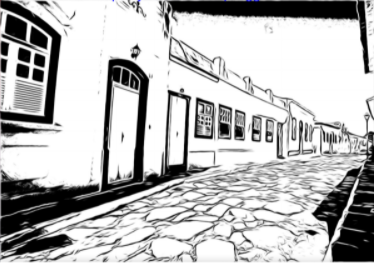

Documentário Entre luz e câmera: o audiovisual em Leodegária de Jesus
Rosa Berardo participa da FLIVASP com filme sobre a escritora Leodegária de Jesus Acontece no dia 09 de julho, via canal do Youtube do IFG Goiano às 20h, o […]